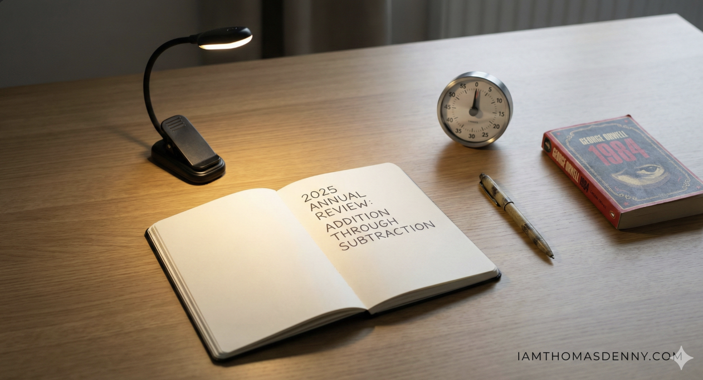

My 2025 Annual Review

I like to write a personal review at the end of every year to reflect on the past 12 months and plan the future. While this has always been a private practice, I believe sharing it publicly will help solidify my thoughts and may be useful to others.
Looking back, the central theme of the year was "addition through subtraction." I tend to overcommit. This year I intentionally stripped back superfluous consumption to allow more focus and white space. This is a philosophy I'll be doubling down on in 2026.
Big Picture
If you had to describe this year in just three words, what would they be?
Reflective, focused, and stimulating.
What was the single best decision you made this year?
Creating a set of ground rules to combat elevated screen time to improve my daily clarity and focus. By instituting boundaries (like keeping the phone out of the bedroom) I went from ~4 hours/day to under 1 hour/day. I've felt more present and connected with my wife and family since making this decision.
What is something you started this year that you want to continue?
Scheduling daily reading into my calendar for at least an hour. I've found a lot of joy and intellectual stimulation through a daily reading habit.
What is something you want to leave behind in 2025?
An old belief that my self-worth is tied to my productivity and output. This belief no longer serves me.
What was the biggest risk you took? Was it worth it?
I initially thought that I'd be alienated from social circles and would feel "out of the loop" by disconnecting from social media. The opposite came to be true and the decision acted as a filter. Though my connections on the periphery have vanished, my connection with those in my real life became deeper.
Intellectual & Creative Growth
What is the number one idea or concept you learned this year that changed how you view the world?
I'm thinking a lot about structurally misaligned incentives — the idea that what is good for the system is not necessarily good for the individual. For example, the economy (system) is built and fueled through consumerism and debt (bad for the individual).
What is a strong opinion you held in January that you have changed your mind about?
That you can't change your mind once you commit to something. I've found myself in situations that were not the best for me purely because of a rigid belief that you must always "finish what you start." I no longer believe this. Quitting the wrong things creates space for the right things.
Did you consume more than you created, or create more than you consumed?
It was a healthier mix this year. I spent the first 6 months creating and then pulled back and focused on curating who and what I consume. I've narrowed it down to a few email newsletters and a couple YouTube channels. That's it.
What was the most impactful book, podcast, or article you absorbed?
1984 by George Orwell. It's a classic for a reason. One lesson that stuck is the power of language to control thought and destroy individuality. It made me appreciate the nuance of language that much more.
Career & Professional Growth
What was your proudest professional accomplishment?
Forcing myself to step up and lead team initiatives on technologies that I was not familiar with. This forced me to develop the habit of continuous learning in order to be prepared to teach my peers.
What new skill or technology did you learn or improve upon?
Generative AI. This has been the theme all year and is something I do not see going away anytime soon.
What was the biggest bottleneck or frustration in your work life, and is it within your control to change it?
The pressure to integrate AI into every crevice of professional life, regardless of necessity. I view AI as a high-utility tool, but the current ecosystem is crowded with solutions looking for problems. In the spirit of "addition through subtraction," I'm refusing to chase every new tool, focusing instead on deep mastery of the few applications that genuinely enhance leverage.
Health (Physical & Mental)
On a scale of 1–10, how would you rate your physical energy levels throughout the year?
8/10 — I felt great most of the year.
Did you hit your major fitness milestones?
I hit a few and fell short of others due to injury. I'm happy with setting PRs in the 5k, half marathon, and Hyrox Doubles. Next year, I'll be allocating training time for mobility and calisthenic strength.
How was your sleep quality and stress management?
9/10 — only thing that keeps me up is my dog's snoring.
Did you prioritize preventative health?
No, and this is my biggest area of opportunity. I did not go to the doctor or take what I feel are adequate rest days based on my training load.
Personal Finance
Did your spending align with your values?
Absolutely. My main focus for 2025 was intentional budgeting and spending on experiences over things.
What was the best purchase you made for under $100?
Two things: a book light and an analog timer. Simple.
Did you meet your savings or investment goals?
Yes. I automated all finances to make sure 10% of pre-tax income is invested and 20% of post-tax is saved. I'm currently investing and saving ~30%+ of my pay. Learning to live below my means is proving fruitful.
Habits
What is the one habit you built this year that you are most proud of?
Keeping the phone on the countertop and only using it for calls and texts. This single physical boundary has massively improved my ability to focus.
What is a habit you tried to build but couldn't stick to? Why?
Consistent writing. I tend to overthink what I'm saying and, as a result, didn't publish much. I'm testing a method of setting hard limits and shipping my work once the timer is up.
What is one recurring distraction you need to eliminate?
YouTube videos. I've installed a few blockers on my laptop and taken it off my phone. I'm trialing a strategy of only using the platform as a search engine — hidden recommendations, shorts, and comments.
Looking Ahead
What is the Number One Goal that, if achieved, would make next year a success?
Doing less and having one key focus at a time. I want to fully embrace the idea of seasonality rather than trying to maximize every area of my life simultaneously.
What is a habit you need to build to achieve that goal?
I need to identify which areas of my life will be in "Growth Mode" and which will be in "Maintenance Mode." Once identified, I'll list out the minimum effective dose of each area in maintenance.
What are you most excited about right now?
I'll be traveling to Italy in August with my wife and mom. This has been a dream of mine since I was a kid and I feel blessed to make it a reality.